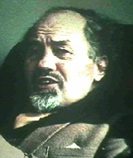

Thursday, February the 10th, 2005
back to: title, date or indexes
Our quote of the day last Saturday (5th February) was from Cosmic Friends by Jimmy Goddard, a splendid little twelve-page pamphlet I acquired many years ago. The person who gave it to me assured me that it was a work of genius, and I agree. Goddard explains how his teenage interest in communication with extraterrestrial beings was nurtured when he joined the STAR Fellowship, an organisation founded by Tony Wedd of Chiddingstone in Kent. Apparently, Wedd had received a greeting from space people, who “communicated” the words Yava Hoosita! to him. Goddard later deciphered the letters YH, upside down, in the static of a video recording: “I could never with certainty say it was not a coincidental interference pattern, but it did seem like a final seal of approval for my ideas on thought communication”.
Elsewhere in this magnificent pamphlet, Goddard explains his discovery that he is “virtually living on half a brain”, how he suspects that a couple on a package holiday in Holland may have been space people because they spoke in “an accent my parents could not place” and did not carry British passports, and how his wife Doris sees, one night, “two starlike objects wheeling and turning about in a very birdlike motion”. Doris thinks they're birds, but her husband has other ideas about this “sighting”.
These days, Jimmy Goddard has a superb suite (if that's the word) of webpages, which are well worth a visit. The late lamented Tony Wedd has his own nook therein, where you can find out more about the STAR Fellowship. Yava Hoosita!

Tony Wedd, editor of The Crow